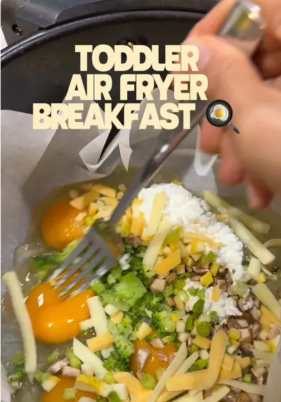

Breakfast doesn’t have to mean standing over the stove

Ingredients
- 5 eggs
- Chopped veggies of your choice (I used steamed broccoli, mushrooms, yellow zucchini, and green onions)
- Dash of garlic powder
- 1 spoonful of cottage cheese
- Small handful of shredded cheese
Steps
- Line your air fryer basket with parchment paper.
- Add all ingredients and mix together.
- Air fry at 350°F for 15–20 minutes, or until the eggs are fully cooked.
- Let cool slightly, then slice into toddler-friendly pieces. We use 5 eggs so Mom and Dad each get 2 eggs and our toddler gets 1—an easy breakfast for everyone with just one batch! I love this recipe because I don’t have to turn on the oven, and I can simply dump everything in the air fryer and let it cook while I get other things done.
Recipe text as written by @busymamaeasybites on TikTok. Open original